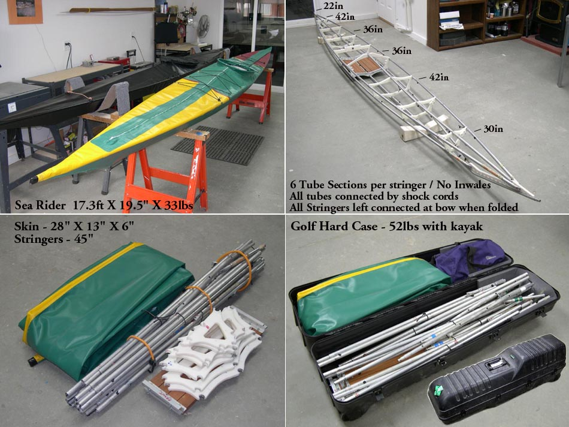

| Sea Rider Frame Changes (Oct 2005) | Menu Previous Page Next Page |
|

Most of the kayaks in the manual break down into 3 sections per stringer. On the longer boats this results in tube sections approaching 6 ft in length. In addition, on the shallow Greenland boats such as the Sea Rider above, inwales are added to increase frame stiffness. However, the 6ft tube sections make it difficult to transport these kayaks by air and the inwales increase assembly time.
As an experiment, I modified my Sea Rider by using 6 tube sections per stringer with a maximum stringer length of 42 in ( 45in with insert). In addition, I removed the inwales to re-evaluate flex characteristics. The 17ft Sea Rider now packs in the same size golf travel case as the shorter Sea Otter 15 . The Sea Rider's 6 tube sections per stringer is modeled after the shorter Sea Otter setup. Use the {BACK} key to return.
I had intended to develop a non inwale stiffening method, possible similar to the Feathercraft Khatsalano. However, even though The combination of more tube sections and no inwales does result in the kayak being more flexible on land, it appears to have little effect on the Sea Rider's on water performance.
On the water, where it counts, frame flex feels about the same as before. Trials were conducted over several days in varying conditions with winds up to 20 knots. Paddler weight was 170 lbs. with an all up weight of 210lbs. Performance was similar with and without inwales. In fact, the boat felt stable, was just as fast, turned and tracked as well as before, and showed no signs of greater on water hull flex. I will continue to test the modified Sea Rider and other boats with similar modifications before adding construction details to the manual. Rather than an internal bracing system to replace the inwales, I'm now planning to add double deck stringers fore and aft that tie into the keel. These, plus the original center deckridge, should provide additional frame stiffness if needed and will be easier to assemble then the inwales. |
|